“Dynamic Facades: Transforming Public Spaces,” involves projecting AI-generated images onto an existing facade. This project explores the concept of transforming a square hall or public space by altering the facades of surrounding buildings, thereby changing the area’s atmosphere.
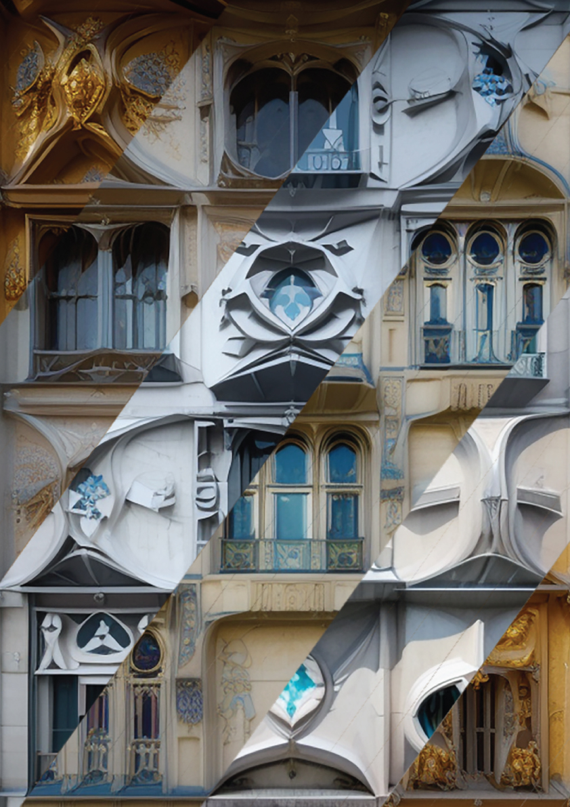
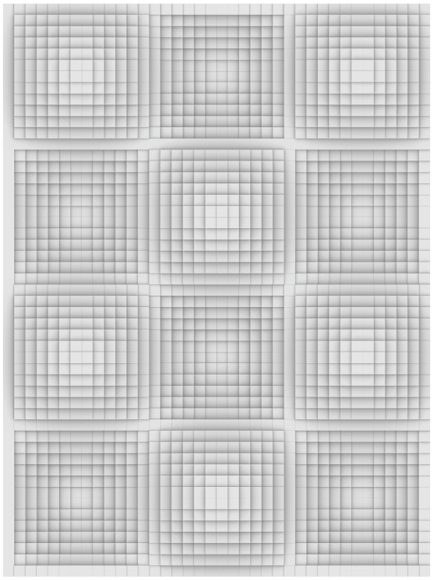
Parametric Modelling and Laser Cutting
The projections will be displayed on a laser-cut model designed using parametric architecture language. Architecture styles has language, Parametric architecture is chosen as the foundation for this project because it employs mathematical definitions in design, making it a universal language. This approach ensures that the architectural style serves as an ideal canvas for the installation.
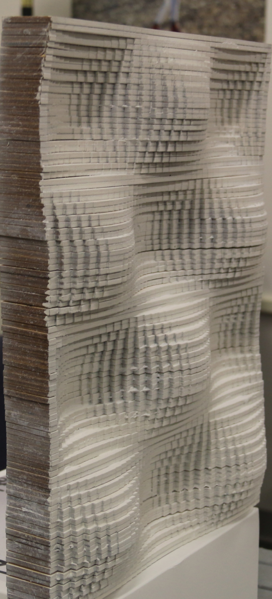
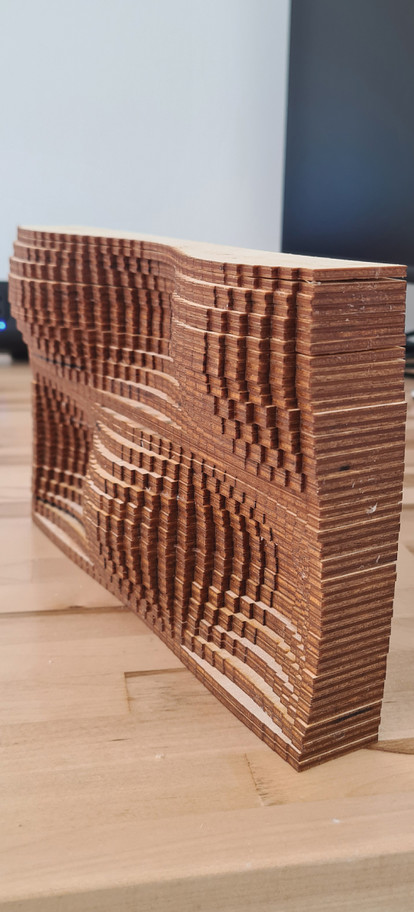
Taking 2D render as Input
Taking the existing render of the Source Model and feeding as input to AI with Contorlnet to create variations of Architectural Languages, like given examples below. However, in the installation it is mixture of multiple languages. Exploring different styles by mixing them together. Project mostly influenced by Refik Anadol’s works, especially one he made on Casa Batllo.
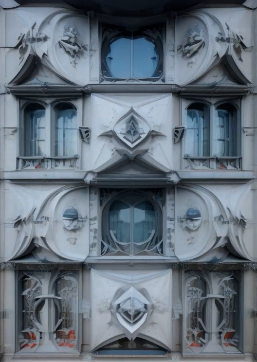
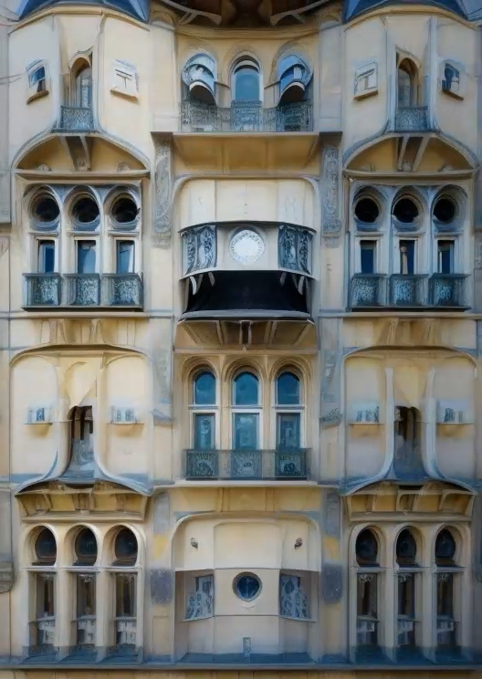
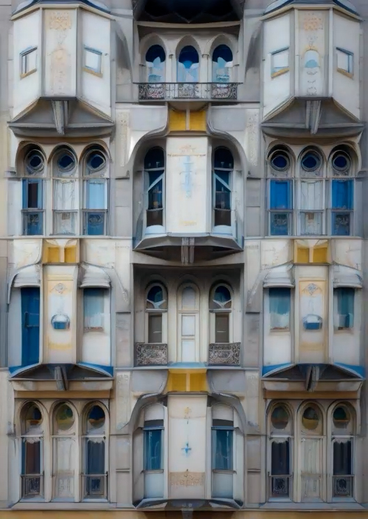
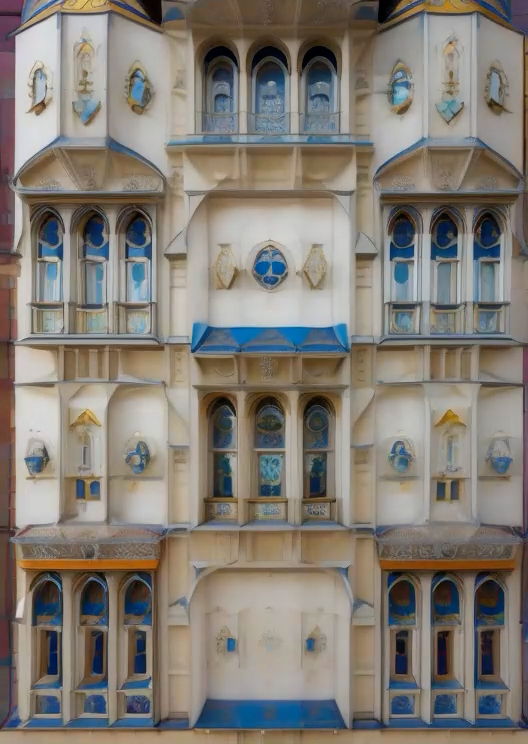
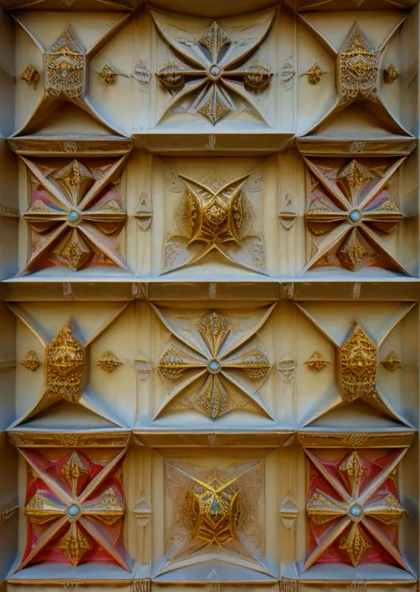
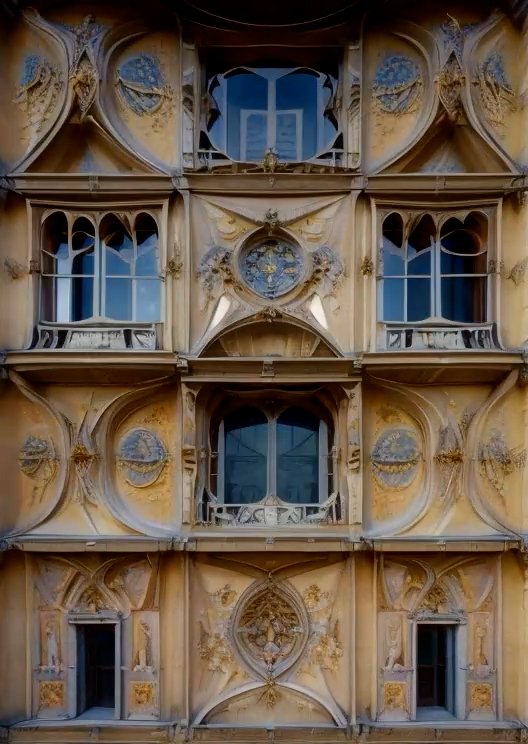
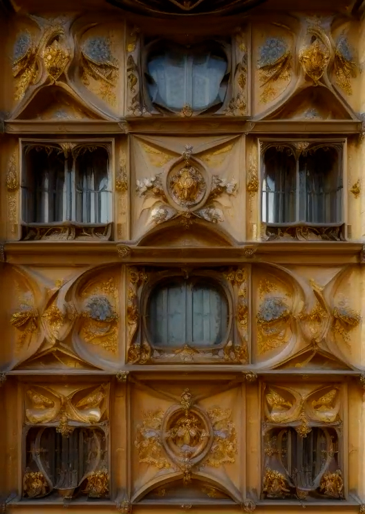
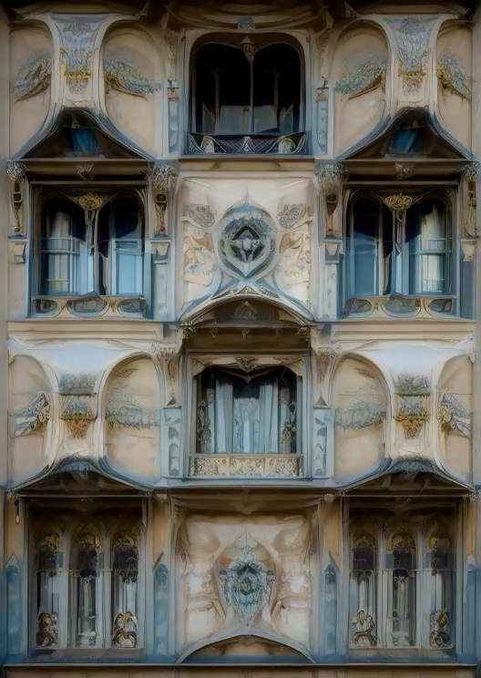
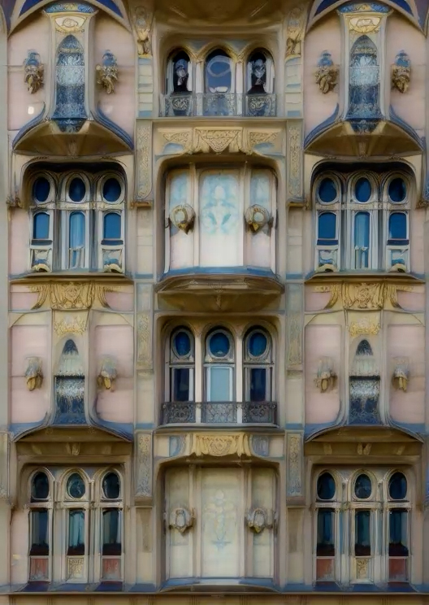
Videos shows the outcome AI rendering that will be projected onto the small scale facade. The next video shows the first prototype of the installation.
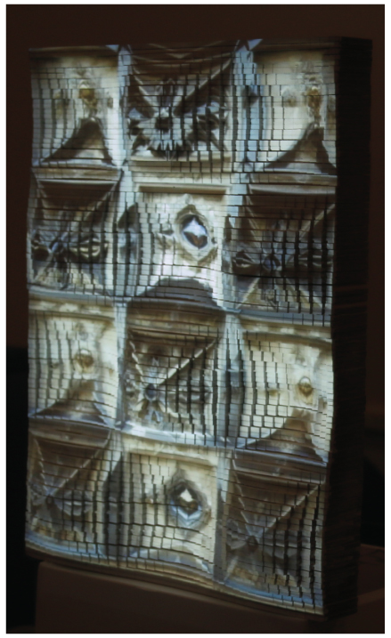
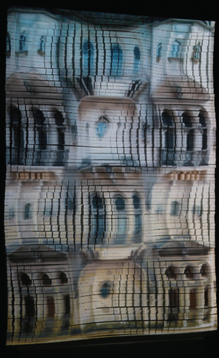
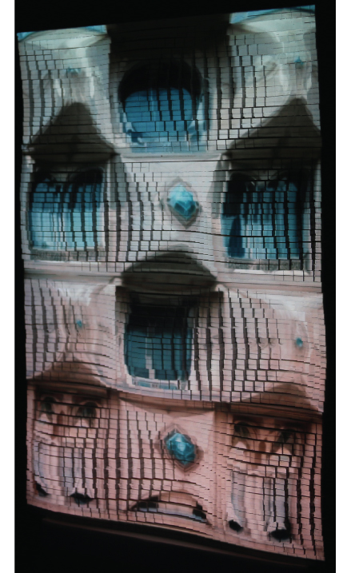
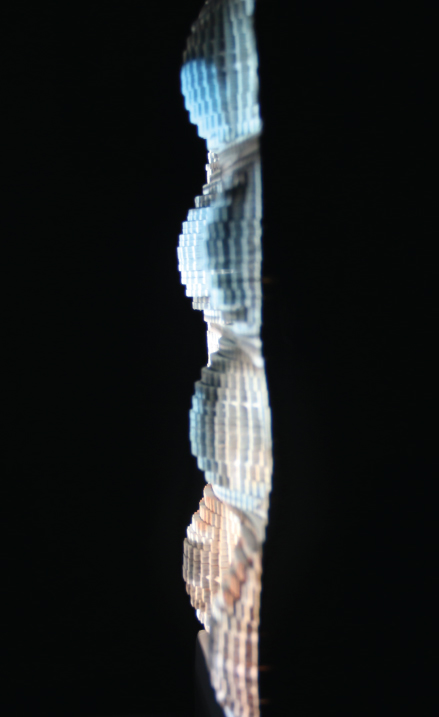
Final Result
In the end the full rendered version of AI render has been projected directly onto the facade so it won't cause any shadows. The project could be done to an existing facade but I wanted a facade that has 3 dimensional texture, not a flat surface.